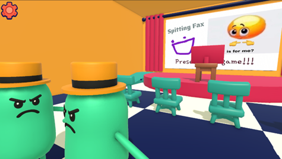
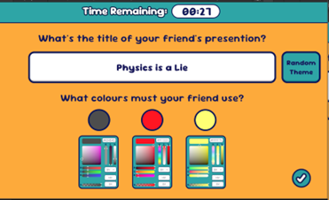
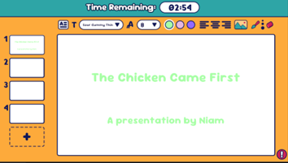
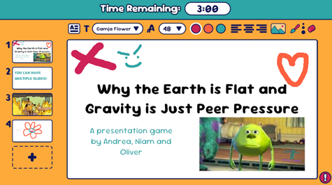
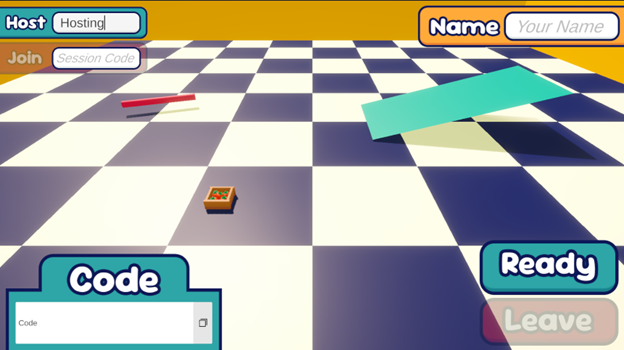

Unity · Physics & Gameplay Programmer
Spitting Fax
A chaotic multiplayer party game where players battle it out on stage, delivering ridiculous presentations built from each other's prompts. Survive the crowd — who judge you by pelting you with tomatoes or showering you with cash. Created during my multiplayer module at Kingston University.
Check it out for yourself!
View on GitLab →Main Features
Everything is multiplayer-first and fully replicated.
- Active-to-passive ragdoll system that is fully replicated
- Replicated physics-based projectiles
- Multiplayer lobby system using Unity sessions
- Replicated presentation slides that are captured and displayed
- Presentation scoring system
Design
The game uses a minimalistic, childish UI design, giving it a light-hearted feel. Customise your slides with memes and hand-drawn chaos, then perform — ragdoll physics ensures every presentation ends in glory or disaster.
Inspired by Fall Guys and Gartic Phone.
Development Challenges
Replicating the active ragdoll was the hardest problem: it needed to be server-authoritative without sending excessive amounts of physics data over the network.
The solution was a minimalistic ragdoll approach driven from the root bone, keeping the simulation believable while staying cheap to replicate.
Gameplay Loop
- Host or join a lobby with friends
- Pick a theme and colour scheme
- Create presentations from each other's prompts
- Present while staying on stage — the audience reacts and pushes
- Receive your scores
Gallery




